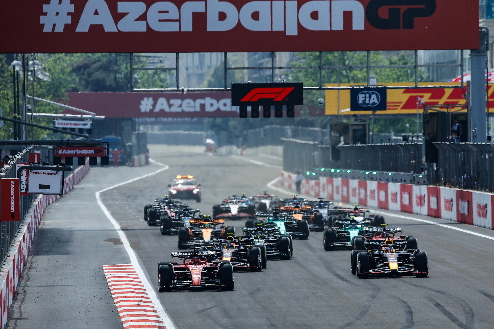
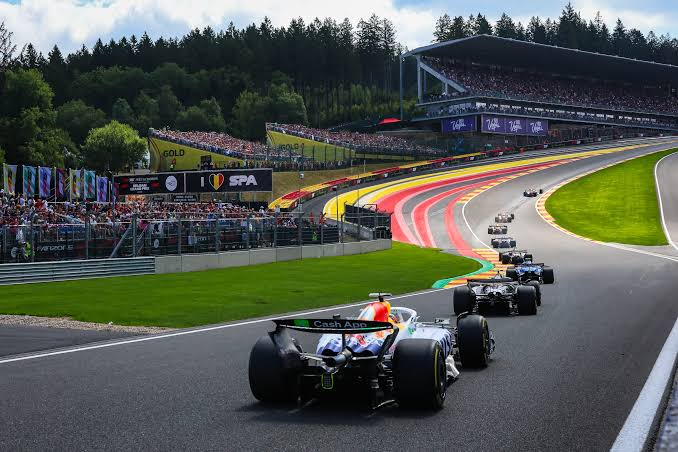
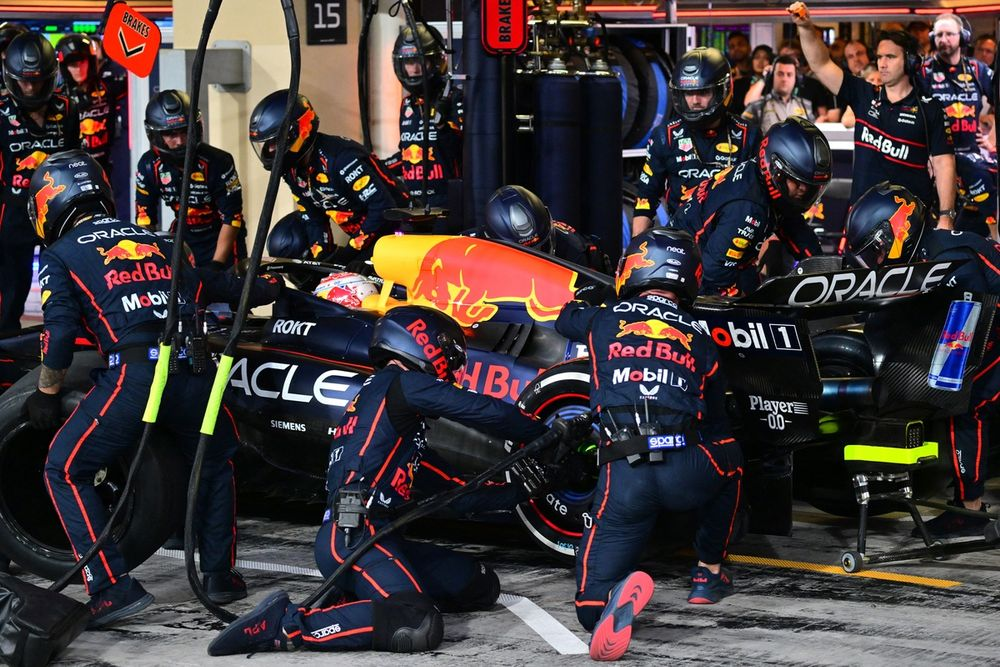
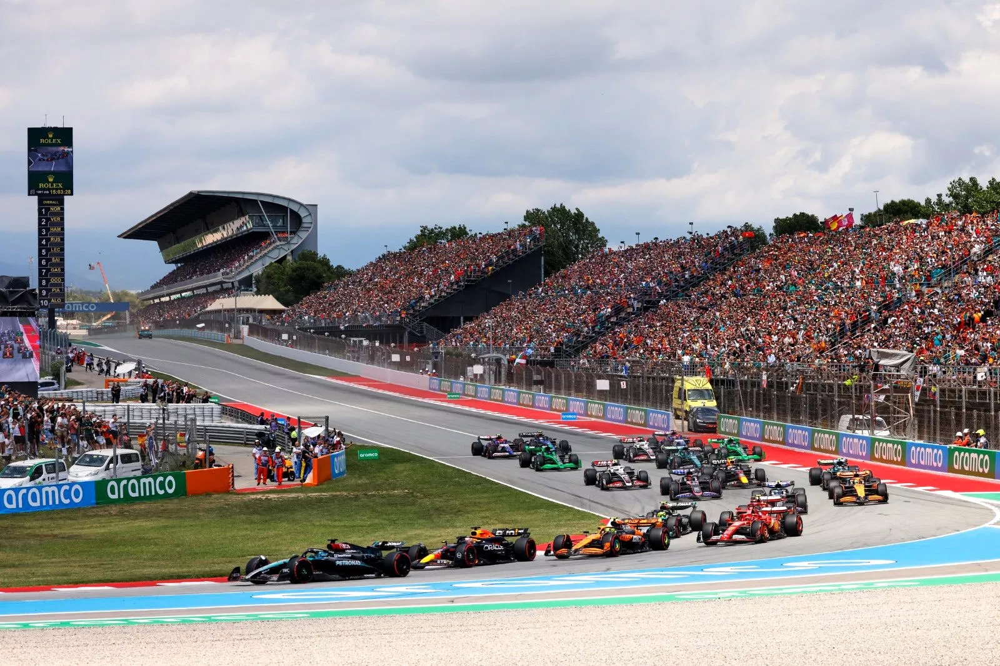
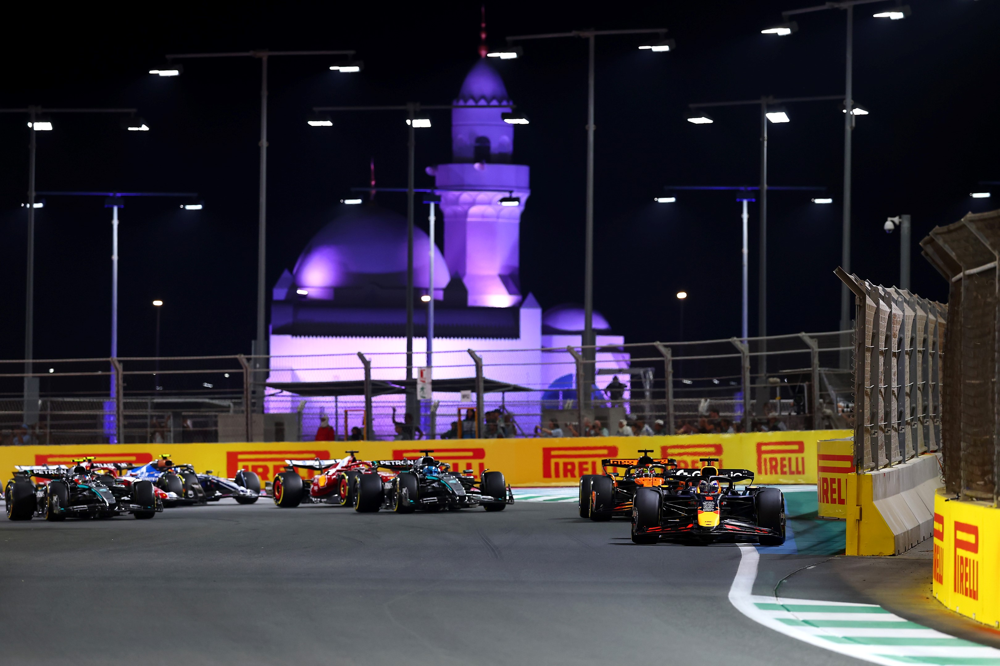
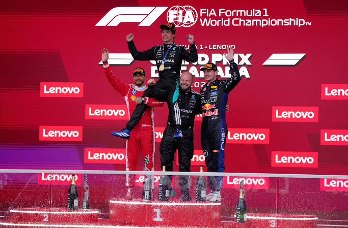

Galería multimedia
Desde los boxes hasta el podio: descubre las imágenes y sonidos de la Fórmula 1.






Video destacado
Resumen en audio
F1 para principiantes
Una introducción en audio para empezar a conocer el mundo de la Fórmula 1.